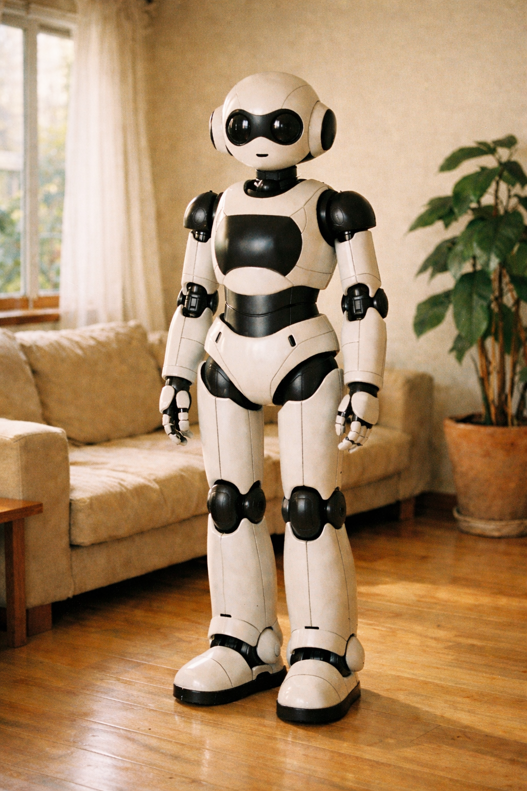
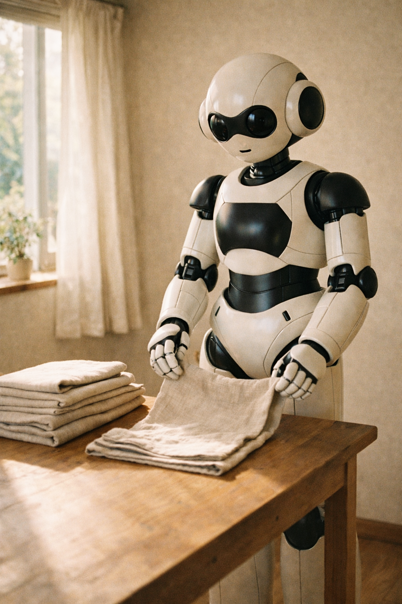

がんばらない毎日を、
あなたに。
家事も育児も、ふわりと支える。
自律型AIパートナー「Maaman」。

Lifestyle
Maamanと暮らす、新しい日常。
母の味も、シェフの味も。
毎日の献立提案から、下ごしらえ、調理まで。あなたの好みを学習し、飽きのこない食卓を彩ります。

いつも、整った部屋で。
洗濯物を畳み、定位置に戻す。散らかったおもちゃも片付ける。帰宅した瞬間、心がホッとする空間を保ちます。
静かに、そばにいます。
お子様の寝かしつけや、離れて暮らす家族の安否確認も。プライバシーを守りながら、優しく見守ります。
Q&A
よくあるご質問
はい、可能です。ご家庭の好みの味を学習し、薄味から濃い味まで柔軟に対応します。
徹底した安全設計です。柔らかい素材と高精度センサーにより、お子様やペットとの衝突を回避します。
カメラ映像や会話データは、外部に送信されず本体内で厳重に管理されます。安心してお使いください。
あなたの毎日に、余白を。
Maamanは、現在予約受付中です。
まずは無料のパンフレットをご覧ください。